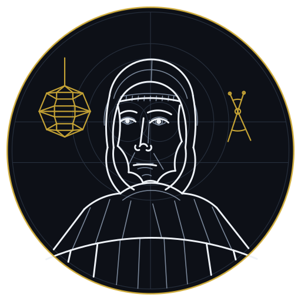

Fra Luca Pacioli¶

Fra Luca Pacioli (c. 1447–1517), Franciscan friar, teacher of mathematics, and close collaborator of Leonardo da Vinci, bridged ancient Euclidean proportion with Renaissance art, architecture, algebra, and double-entry accounting. This archive preserves his two landmark Venetian treatises—De Divina Proportione (1509) and the Summa de Arithmetica (1494)—across synchronized multilingual tracks, folio-cropped woodcuts, calibrated vector figures, and exact symbolic demonstrations.
Works in This Archive¶

Venetian First Edition · 1509 · 71 Chapters · 60 Leonardo Woodcut Plates
On the Divine Proportion (*De Divina Proportione*) — Explores the golden ratio and its “thirteen marvelous effects” from Euclid’s Book XIII, Vitruvian architectural proportion, the geometric Roman alphabet, and sixty Platonic and Archimedean solids drawn in perspective by Leonardo da Vinci.
Venetian First Edition · 1494 · 5 Distinctions
Summary of Arithmetic, Geometry, Proportions and Proportionality (*Summa de Arithmetica*) — The first printed encyclopedia of Renaissance mathematics, uniting speculative arithmetic, Cossic algebra, Euclidean proportion theory, practical geometry, and the celebrated treatise on Venetian double-entry bookkeeping.
Key Features¶
Multilingual Synchronized Codices
Read De Divina Proportione across synchronized English, original 1509 Venetian Italian, and Constantin Winterberg’s 1889 German edition alongside archival folios.
Woodcuts & Calibrated Vector Diagrams
Inspect cropped 1509 Venetian woodcuts—including Leonardo’s sixty polyhedral plates, Vitruvian diagrams, and the Roman capital alphabet—paired with interactive SVGs.
Exact SymPy Proportions & Bookkeeping
Verify golden-section polyhedra, Boethian proportions, and Venetian ledger conservation laws symbolically in Symbolic Demos.
Reference & Project¶
Scholarly Apparatus
People — Pacioli, Leonardo da Vinci, Piero della Francesca, Euclid, Boethius, and Winterberg
Bibliography — 1494 and 1509 Venetian prints and modern critical editions
Divine Proportion Glossary & Summa Glossary — Renaissance Italian, Latin, and Greek terms
About This Project
About — Scope, folio provenance, and connection to GEOMETOR
Using This Edition — Reading guide, track switching, and diagram controls
Demos, Log, & Modules — Symbolic demos, journal, and API reference